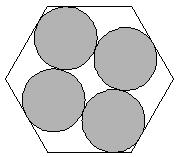

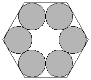
Found by Shahriar Manzoor
in April 2002.
Found by Erich Friedman
in 1999.
Trivial.
| 1. 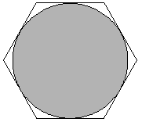 | 2. 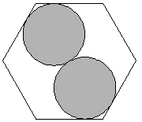 | 3. 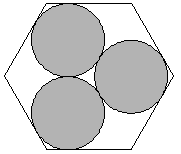 | ||
| s = 2/√3 = 1.154+ Trivial. | s = 1 + 2/√3 = 2.154+ Trivial. | s = 4/√3 = 2.309+ Trivial. |
| 4. 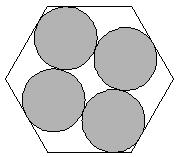 | 5.
| 6. 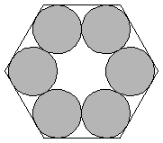 | ||
| s = 2/√3 + 4/√7 = 2.666+ Found by Shahriar Manzoor in April 2002. | s = 2.999+ Found by Erich Friedman in 1999. | s = 2 + 2/√3 = 3.154+ Trivial. |
| 7. 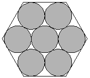 | 8. 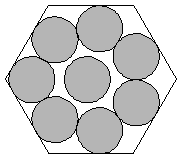 | 9. 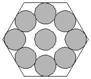 | ||
| s = 2 + 2/√3 = 3.154+ Trivial. | s = 3.709+ Found by David W. Cantrell in July 2002. | s = 20/7 + 2/√3 = 4.011+ Found by David W. Cantrell in July 2002. |
| 10. 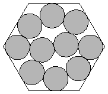 | 11. 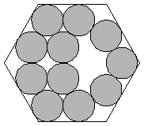 | 12. 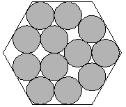 | ||
| s = 4.119+ Found by David W. Cantrell in July 2002. | s = 2 + 4/√3 = 4.309+ Found by Erich Friedman in 1999. | s = 2 + 4/√3 = 4.309+ Found by Erich Friedman in 1999. |
| 13. 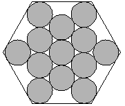 | 14. 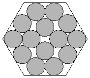 | 15. 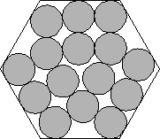 | ||
| s = 8/√3 = 4.618+ Found by Erich Friedman in 1999. | s = 2 + 2/√3 + 4/√7 = 4.666+ Found by David W. Cantrell in July 2002. | s = 4.961+ Found by David W. Cantrell in January 2006. |
| 16. 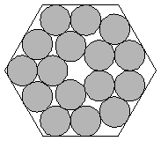 | 17. 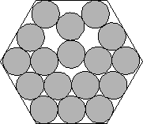 | 18. 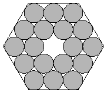 | ||
| s = 4.999+ Found by David W. Cantrell in July 2002. | s = 5.133+ Found by David W. Cantrell in January 2006. | s = 4 + 2/ 3 = 5.154+ 3 = 5.154+Trivial. |
| 19. 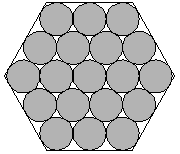 | 20. 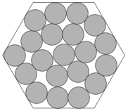 | 21. 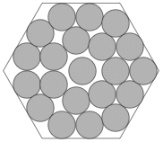 | ||
| s = 4 + 2/√3 = 5.154+ Trivial. | s = 5.676+ Found by David W. Cantrell in July 2012. | s = 5.709+ Found by David W. Cantrell in July 2012. |
| 22. 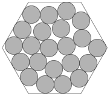 | 23. 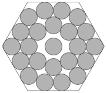 | 24. 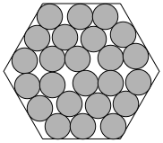 | ||
| s = 5.952+ Found by David W. Cantrell in July 2012. | s = 34/7 + 2/√3 = 6.011+ Found by David W. Cantrell in July 2012. | s = 6.117+ Found by Rob Pratt in March 2020. |